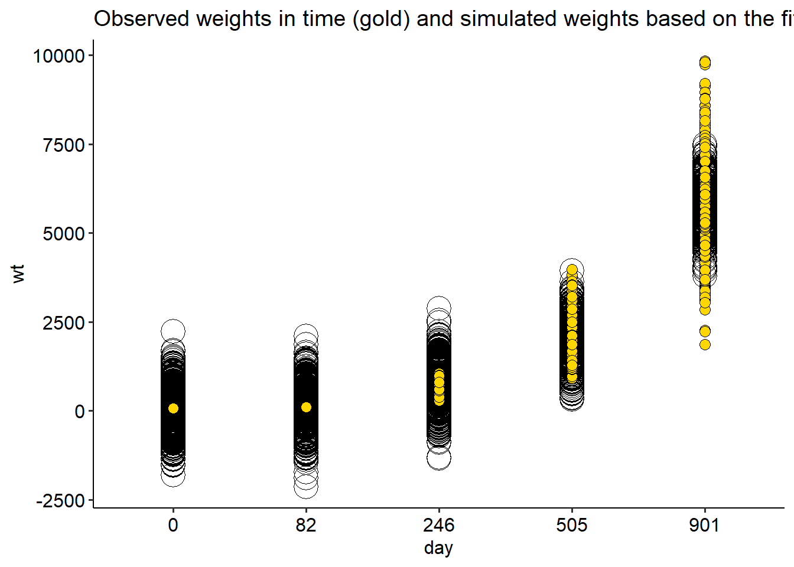
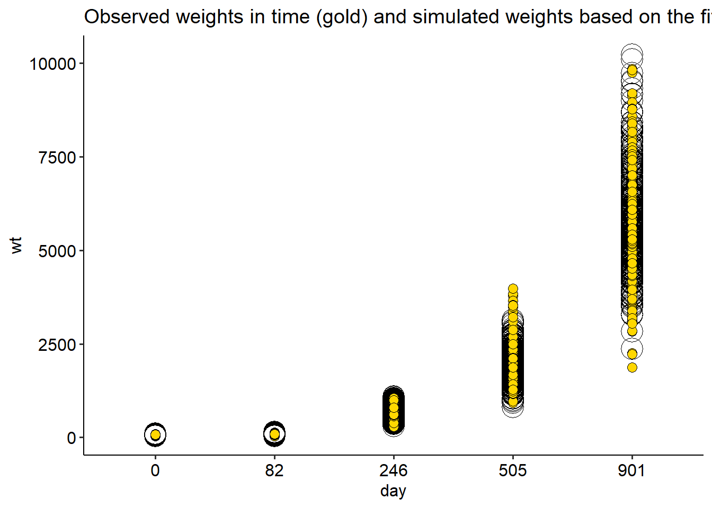

Day 5 Generalized linear mixed models
5.1 GLMMs
Learning objectives:
- What are GLMMs
- What is a distributional assumption
- Working with GLMMs
5.1.1 Review – building a statistical model
1 – Select a probability distribution for the data \(\mathbf{y}|\mathbf{u}\). 2 – Select a link function \(g(\cdot)\), \(\boldsymbol\eta = g(\mathbf{y}|\mathbf{u})\). 3 – Define the (linear) predictor \(\boldsymbol\eta = \mathbf{X}\boldsymbol{\beta} + \mathbf{Z}\mathbf{u}\).

Figure 5.1: Probability distributions.

Figure 5.2: Properties of probability distributions.
5.1.2 Generalities of GLMMs
The structure of GLMMs is very similar to the notation we were using for LMMs. We can generally describe them as:
\[y|\mathbf{u} \sim P(\mu, \; \phi),\] where:
- \(y\) is the data,
- \(\mathbf{u}\) are the random effects,
- \(\mu\) is the mean,
- \(\phi\) is the dispersion.
- The linear predictor for \(\mu\) can be described as \(g(\boldsymbol{\mu}) = \boldsymbol{\eta} = \mathbf{X} \boldsymbol{\beta} + Zu}\), where \(g(\mu) = \eta\) is the link function applied to the expected value.
5.1.3 Implications for model fitting
- Least Squares Estimator is no longer Maximum Likelihood Estimator
- Variance is no longer \(\hat\sigma^2 = \frac{SSE}{df_e}\)
- The whole concept of degrees of freedom is more diffuse
- ANOVA shells are still useful to analyze designs are number of independent, true, replicates
- The \(Var(\mathbf{y}|\mathbf{u})\) may be specified, but not specify the full likelihood (check out the properties above)
- Quasi-likelihood for modeling overdispersion or repeated measures in GLMMs:
- \(E(\mathbf{y} \vert \mathbf{b}) = \boldsymbol{\mu}\vert \mathbf{b}\)
- \(Var(\mathbf{y} \vert \mathbf{b}) = \mathbf{V}_{\mu}^{1/2}\mathbf{A}\mathbf{V}_{\mu}^{1/2}\)
5.1.4 Model diagnostics
Number of Orobanche seeds tested/germinated for two genotypes and two treatments.
library(glmmTMB)
dat <- agridat::crowder.seeds
m_binom <- glmmTMB(cbind(germ, n-germ) ~ gen*extract + (1|plate),
REML = TRUE,
family = binomial, data = dat)# If we followed conventional model checking, we couldn't find out about anything
dat$phat <- predict(m_binom, type = "response")
dat$resid <- dat$germ - (dat$phat * dat$n)
plot(dat$phat, dat$resid)

## Object of Class DHARMa with simulated residuals based on 250 simulations with refit = FALSE . See ?DHARMa::simulateResiduals for help.
##
## Scaled residual values: 0.1374871 0.5518681 0.1637147 0.9230439 0.7149169 0.8244776 0.3351514 0.277819 0.879538 0.08237197 0.6173228 0.5894222 0.7512811 0.2211422 0.108248 0.6607457 0.05951533 0.5632577 0.4263507 0.897899 ...5.2 Applied example – picking distributions
A clinical field trial comparing the performance of different vaccines on the growth and survival of Atlantic salmon under standard production conditions.
- Treatment structure: two-way factorial (4 vaccines x 5 times)
- Design structure: completely randomized design.
- Experimental unit: fish
- Response: weight.
url <- "https://raw.githubusercontent.com/stat870/fall2025/refs/heads/main/data/fish_vaccines.csv"
fish <- read.csv(url)
# plot the data
fish %>%
ggplot(aes(day, wt))+
geom_point(aes(fill = factor(vaccine),
group = factor(vaccine)),
position = position_dodge(width = 60),
shape=21, size =3.5, alpha =.7)+
labs(y = expression(Weight~(g~fish^{-1})), x = "Time (days)")+
theme_classic()+
labs(fill="Vaccine treatment")+
theme(legend.position = "bottom")+
scico::scale_fill_scico_d()
Considering that the variance increases with the mean, a fair model for fish weight could be:
\[y_{ijk}|u_{ijk} \sim P(\mu_{ijk}, \phi),\\ \log(\mu_{ijk}) = \eta_{ijk} = \eta_0 + V_i + T_j + VT_{ij} + u_{ijk},\] where:
- \(y_{ijk}\) is the fish weight of the \(k\)th fish under the \(i\)th vaccine treatment at the \(j\)th timepoint, and (conditional on \(u_{ijk}\)) arises from a Gamma distribution with mean \(\mu_{ijk}\) and dispersion \(\phi\),
- \(\eta_{ijk}\) is the linear predictor,
- \(\eta_0\) is the overall mean mean of the linear predictor,
- \(V_i\) is the effect of the \(i\)th vaccine treatment,
- \(T_j\) is the effect of the \(j\)th timepoint,
- \(VT_{ij}\) is the interaction between the \(i\)th vaccine treatment and the \(j\)th timepoint, and
- \(u_{ijk}\) is the random effect for the fish weight of the \(k\)th fish under the \(i\)th vaccine treatment at the \(j\)th timepoint, that is accounting for the fact that repeated measures are not independent.
fish <- fish |>
mutate(across(c(vaccine, day), ~as.factor(.))) |>
drop_na()
m1_Normal <- glmmTMB(wt ~ day*vaccine, data = fish)
m1_Gamma <- glmmTMB(wt ~ day*vaccine, family = Gamma(link = "log"), data = fish)fish$residual_N <- resid(m1_Normal, type = "response")
fish$yhat_N <- predict(m1_Normal, type = "response")
fish$residual_G <- resid(m1_Gamma, type = "response")
fish$yhat_G <- predict(m1_Gamma, type = "response")simulate_N <- simulate(m1_Normal)
simulate_N$day <- fish$day
simulate_G <- simulate(m1_Gamma)
simulate_G$day <- fish$day
fish |>
ggplot(aes(day, wt))+
geom_point(aes(day, sim_1), shape = 21, data = simulate_N, size = 7)+
geom_point(shape =21, fill ="gold", size = 3)+
theme_pubr()+
labs(title = "Observed weights in time (gold) and simulated weights based on the fitted Normal model (open)")
fish |>
ggplot(aes(day, wt))+
geom_point(aes(day, sim_1), shape = 21, data = simulate_G, size = 7)+
geom_point(shape =21, fill ="gold", size = 3)+
theme_pubr()+
labs(title = "Observed weights in time (gold) and simulated weights based on the fitted Gamma model (open)")